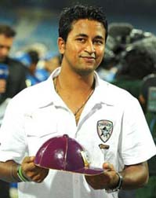

DLF IPL 2010

*Winner: Chennai Super Kings
*Team Squad: (Captain - MS Dhoni)

(Click the above pic for viewing the Highlights of the IPL Final 2010)
MS Dhoni, Srikkanth Anirudha, Ravichandran Ashwin, S Badrinath, George Bailey, Doug Bollinger, Dwayne Bravo, Faf du Plessis, Ben Hilfenhaus, Michael Hussey, Shadab Jakati,
Joginder Sharma,Suraj Randiv, Nuwan Kulasekara, Yo Mahesh, Albie Morkel, Abhinav Mukund, Suresh Raina, Wriddhiman Saha, Tim Southee, Scott Styris, Sudeep Tyagi, Ganapathi Vignesh,
Murali Vijay, K Vasudevadas
*Runner ups: Mumbai Indians

*Team Squad: (Captain - Sachin Tendulkar)
Sachin Tendulkar, Abu Nechim, Aiden Blizzard, Yuzvendra Chahal, Dilhara Fernando, James Franklin, Harbhajan Singh, Moises Henriques, Davy Jacobs, Sarul Kanwar, Dhawal Kulkarni,
Lasith Malinga, Ali Murtaza, Munaf Patel, Kieron Pollard, Ambati Rayudu, Rajagopal Sathish, Rohit Sharma, Tirumalsetti Suman, Pawan Suyal, Andrew Symonds, Aditya Tare, Santosh Yadav,
Suryakumar Yadav, Clint McKay, Ray Price
*Orange Cap Winner: Sachin Tendulkar(IND) : 15 Matches 618 Runs - Mumbai Indians
(Click for viewing the video 'Orange cap Winner - Sachin Tendulkar 2010')
*Purple Cap Winner: Pragyan Ojha(IND) : 16 Matches 21 Wickets - Deccan Chargers

(Click for viewing the video 'Purple cap Winner - Pragyan Ojha 2010')
*Player of the Series: Sachin Tendulkar - Mumbai Indians